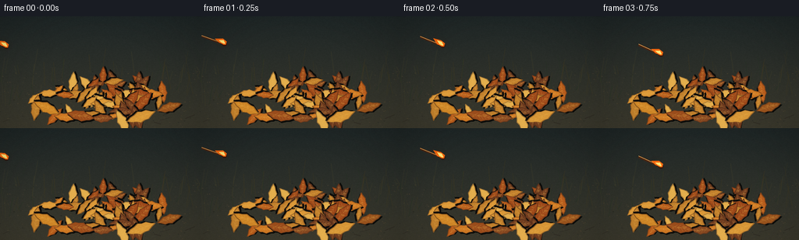
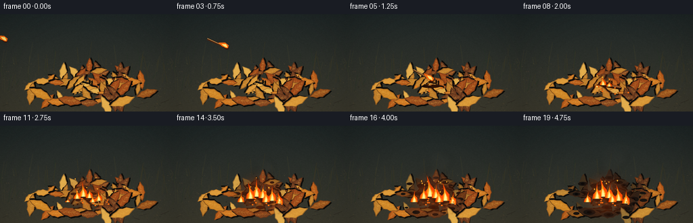
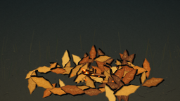
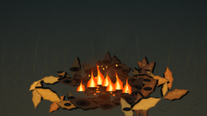

CODING AGENTS AS PIXEL WORLD MODELS
traex/GPT-5.6-Sol · phygen_142
点击播放 · 原生 RGB 像素
逐轮保存的候选
回放视频、检查图与代码变化。
每份候选均可单独播放。实际图片检查记录在下方工具轨迹中。
候选 01播放与检查图
点击播放 · 原生 RGB 像素


展开代码变化
--- 上一保存版本
+++ 本次保存版本
@@ -0,0 +1,269 @@
+from pathlib import Path
+import math, random
+import numpy as np
+from PIL import Image, ImageDraw, ImageFilter
+import artifact_io
+
+W, H, N, FPS = 256, 144, 20, 4.0
+S = 3
+WW, HH = W*S, H*S
+ROOT = Path(__file__).resolve().parent
+rng = random.Random(142)
+
+def C(c): return tuple(int(v) for v in c)
+def lerp(a,b,t): return tuple(int(a[i]*(1-t)+b[i]*t) for i in range(len(a)))
+def pts(ps): return [(int(x*S),int(y*S)) for x,y in ps]
+def box(b): return tuple(int(v*S) for v in b)
+
+def ellipse(draw, b, fill, outline=None, width=1):
+ draw.ellipse(box(b), fill=fill, outline=outline, width=max(1,int(width*S)))
+def line(draw, p, fill, width=1, joint='curve'):
+ draw.line(pts(p), fill=fill, width=max(1,int(width*S)), joint=joint)
+def polygon(draw, p, fill, outline=None):
+ draw.polygon(pts(p), fill=fill)
+ if outline: draw.line(pts(p+[p[0]]), fill=outline, width=max(1,S))
+
+# Static ground: photographic-looking soil and distant dim vegetation.
+yy, xx = np.mgrid[0:HH, 0:WW]
+base = np.zeros((HH,WW,3), dtype=np.float32)
+# cool dusk background, increasingly earthy downward
+v = yy/(HH-1)
+base[:,:,0] = 31 + 27*v
+base[:,:,1] = 39 + 17*v
+base[:,:,2] = 39 + 5*v
+noise = np.random.default_rng(142).normal(0, 3.2, (HH,WW))
+base += noise[:,:,None]
+base = np.clip(base,0,255).astype(np.uint8)
+GROUND = Image.fromarray(base,'RGB').filter(ImageFilter.GaussianBlur(0.45*S))
+gd = ImageDraw.Draw(GROUND,'RGBA')
+# defocused background stems and grass
+for i in range(80):
+ x=rng.uniform(-5,261); y0=rng.uniform(70,116); length=rng.uniform(8,32)
+ col=rng.choice([(37,49,35,100),(61,55,32,85),(69,66,42,65)])
+ gd.line([(int(x*S),int(y0*S)),(int((x+rng.uniform(-7,7))*S),int((y0-length)*S))],fill=col,width=rng.choice([2,3,4]))
+# ground grain, twigs and pebbles
+for i in range(260):
+ x=rng.uniform(0,W); y=rng.uniform(70,H); r=rng.uniform(.15,1.1)
+ col=rng.choice([(92,76,53,70),(24,28,25,100),(126,96,60,45),(54,47,36,80)])
+ gd.ellipse(box((x-r,y-r*.45,x+r,y+r*.45)),fill=col)
+for i in range(14):
+ x=rng.uniform(0,W); y=rng.uniform(104,143); le=rng.uniform(5,19); ang=rng.uniform(-.45,.45)
+ gd.line(pts([(x,y),(x+le*math.cos(ang),y+le*math.sin(ang))]),fill=(36,30,25,150),width=rng.choice([2,3]))
+
+# Dry leaf pile descriptors, back to front.
+leaf_palette=[(181,91,27),(205,119,34),(157,72,25),(218,151,55),(133,71,32),(191,126,43),(225,172,76),(112,60,31)]
+leaves=[]
+for i in range(67):
+ # elliptical mound density
+ while True:
+ x=rng.gauss(139,43); y=rng.gauss(105,14)
+ if 41<x<238 and 73<y<136 and ((x-139)/101)**2+((y-107)/38)**2<1.12: break
+ size=rng.uniform(8,17)
+ leaves.append(dict(x=x,y=y,size=size,ang=rng.uniform(-math.pi,math.pi),col=rng.choice(leaf_palette),phase=rng.random()*9,kind=rng.randint(0,2)))
+leaves.sort(key=lambda q:q['y'])
+
+# Extra prominent foreground leaves for readable pile silhouette
+for q in [
+ dict(x=60,y=118,size=18,ang=-2.7,col=(205,133,38),phase=1,kind=0),
+ dict(x=103,y=128,size=18,ang=.2,col=(154,76,27),phase=2,kind=1),
+ dict(x=181,y=129,size=19,ang=2.8,col=(214,149,54),phase=3,kind=0),
+ dict(x=217,y=117,size=16,ang=-.3,col=(153,83,29),phase=4,kind=2)]: leaves.append(q)
+
+def rotated(local, x,y,a):
+ ca,sa=math.cos(a),math.sin(a)
+ return [(x+u*ca-v*sa,y+u*sa+v*ca) for u,v in local]
+
+def draw_leaf(im, q, burn=0.0):
+ d=ImageDraw.Draw(im,'RGBA'); x,y,z,a=q['x'],q['y'],q['size'],q['ang']
+ # serrated pointed leaf; central axis lies local x
+ local=[]
+ steps=7
+ for side in (1,-1):
+ seq=range(steps+1) if side==1 else range(steps,-1,-1)
+ for j in seq:
+ u=-z + 2*z*j/steps
+ env=max(0,math.sin(math.pi*j/steps))
+ serr=(1.0 if j%2==0 else .78)
+ vv=side*z*.39*env*serr
+ local.append((u,vv))
+ p=rotated(local,x,y,a)
+ shadow=rotated([(u+1.6,v+2.0) for u,v in local],x,y,a)
+ polygon(d,shadow,(12,12,10,110))
+ base=q['col']; burned=lerp(base,(33,27,22),min(1,burn*.9))
+ # slight upper highlight retained until fully charred
+ polygon(d,p,(*burned,255),(*lerp(burned,(66,37,21),.45),255))
+ # papery patch mottling
+ for k in range(3):
+ u=(-.45+k*.4)*z; vv=math.sin(q['phase']+k)*z*.12
+ px,py=rotated([(u,vv)],x,y,a)[0]
+ rr=z*(.09+.03*k)
+ ellipse(d,(px-rr,py-rr*.5,px+rr,py+rr*.5),(*lerp(burned,(238,177,71),.22*(1-burn)),70))
+ # vein and branches
+ vein_col=(*lerp(burned,(245,190,92),.40*(1-burn)),190)
+ ve=rotated([(-z*.78,0),(z*.78,0)],x,y,a); line(d,ve,vein_col,.65)
+ for j in range(1,6):
+ u=-z*.6+j*z*.23
+ for side in (-1,1):
+ br=rotated([(u,0),(u+z*.18,side*z*.22*(1-abs(u)/z))],x,y,a)
+ line(d,br,vein_col,.35)
+ if burn>.25:
+ # irregular black scorching around leaf center/edge
+ r=z*(.18+.34*burn)
+ ellipse(d,(x-r,y-r*.42,x+r,y+r*.42),(22,18,15,int(65+120*burn)))
+ if burn>.65:
+ ellipse(d,(x-r*.38,y-r*.22,x+r*.38,y+r*.22),(7,7,7,int(140*burn)))
+
+def glow_layer(t):
+ layer=Image.new('RGBA',(WW,HH),(0,0,0,0)); d=ImageDraw.Draw(layer,'RGBA')
+ g=max(0,min(1,(t-1.18)/2.5))
+ if g<=0:return layer
+ cx,cy=129,102
+ for r,alpha in [(45,11),(31,18),(20,28),(12,40)]:
+ ellipse(d,(cx-r,cy-r*.48,cx+r,cy+r*.48),(255,91,12,int(alpha*g)))
+ return layer.filter(ImageFilter.GaussianBlur(7*S))
+
+def draw_match(im,t):
+ d=ImageDraw.Draw(im,'RGBA')
+ if t<1.28:
+ u=t/1.28
+ hx=8+121*u
+ hy=39+62*u-27*math.sin(math.pi*u)
+ # stick trails behind upper-left; rotates gradually downward
+ ang=0.29+0.22*u
+ L=31
+ tx=hx-L*math.cos(ang); ty=hy-L*math.sin(ang)
+ # shadow just as it nears pile
+ if u>.72:
+ ellipse(d,(hx-15,104,hx+12,109),(10,8,5,int(65*(u-.72)/.28)))
+ line(d,[(tx,ty),(hx,hy)],(75,37,18,255),3.0)
+ line(d,[(tx,ty-0.7),(hx-1,hy-0.7)],(218,166,91,245),1.15)
+ # charred tip
+ line(d,[(hx-5*math.cos(ang),hy-5*math.sin(ang)),(hx,hy)],(15,14,12,255),3.4)
+ ellipse(d,(hx-3.1,hy-2.6,hx+3.2,hy+2.8),(52,23,14,255))
+ draw_match_flame(im,hx,hy,t,ang)
+ # smoke ribbon trailing behind flame
+ smoke=Image.new('RGBA',(WW,HH),(0,0,0,0)); sd=ImageDraw.Draw(smoke,'RGBA')
+ for k in range(4):
+ q=k/3; sx=hx-8-17*q; sy=hy-8-8*q+2*math.sin(t*5+k)
+ ellipse(sd,(sx-2-2*q,sy-1-2*q,sx+2+2*q,sy+1+2*q),(80,85,78,int(38*(1-q))))
+ im.alpha_composite(smoke.filter(ImageFilter.GaussianBlur(2.0*S)))
+ else:
+ # landed match, conspicuous pale stick crossing dark leaves
+ x1,y1,x2,y2=119,103,149,108
+ line(d,[(x1+1,y1+2),(x2+1,y2+2)],(9,8,7,130),3.8)
+ line(d,[(x1,y1),(x2,y2)],(93,50,26,255),3.0)
+ line(d,[(130,104.8),(x2,y2)],(204,150,84,255),1.1)
+ line(d,[(x1,y1),(132,105.2)],(18,16,14,255),3.3)
+ ellipse(d,(116.2,99.7,122.8,106.2),(39,18,12,255))
+ if t<1.72: draw_match_flame(im,120,101,t,0.1,scale=max(.35,(1.72-t)/.44))
+
+def draw_match_flame(im,x,y,t,ang,scale=1):
+ # small wind-swept flame anchored on match head, pointing up-left
+ layer=Image.new('RGBA',(WW,HH),(0,0,0,0)); d=ImageDraw.Draw(layer,'RGBA')
+ flick=.8+.18*math.sin(t*16)
+ outer=[(x-1,y+1),(x-7*scale,y-2),(x-12*scale,y-10*flick*scale),(x-2,y-7*scale),(x+3*scale,y-3*scale),(x+2,y+1)]
+ polygon(d,outer,(255,106,14,245))
+ inner=[(x,y),(x-4*scale,y-2),(x-7*scale,y-7*flick*scale),(x-1,y-5*scale),(x+1,y-1)]
+ polygon(d,inner,(255,231,120,255))
+ glow=layer.filter(ImageFilter.GaussianBlur(4*S)); glow.putalpha(glow.getchannel('A').point(lambda a:a//3))
+ im.alpha_composite(glow); im.alpha_composite(layer)
+
+def flame_shape(d,x,y,h,w,phase,alpha=255):
+ # organic asymmetric pointed flame, point oscillates with convection
+ sway=math.sin(phase)*w*.46
+ outer=[(x-w*.82,y),(x-w*.66,y-h*.26),(x-w*.20,y-h*.43),
+ (x+sway,y-h),(x+w*.12,y-h*.57),(x+w*.72,y-h*.35),(x+w*.78,y)]
+ polygon(d,outer,(255,75,5,alpha))
+ mid=[(x-w*.53,y),(x-w*.35,y-h*.26),(x+sway*.35,y-h*.67),
+ (x+w*.14,y-h*.37),(x+w*.50,y-h*.16),(x+w*.50,y)]
+ polygon(d,mid,(255,153,20,min(255,alpha+5)))
+ inner=[(x-w*.27,y),(x-w*.16,y-h*.17),(x+sway*.12,y-h*.43),(x+w*.25,y-h*.18),(x+w*.29,y)]
+ polygon(d,inner,(255,242,151,min(255,alpha+10)))
+
+def draw_fire(im,t):
+ age=t-1.20
+ if age<=0:return
+ growth=min(1,age/2.35)
+ # soft fiery halo
+ halo=Image.new('RGBA',(WW,HH),(0,0,0,0)); hd=ImageDraw.Draw(halo,'RGBA')
+ for cx,cy,r in [(126,103,13+20*growth),(145,106,8+14*growth),(106,108,5+10*growth)]:
+ ellipse(hd,(cx-r,cy-r,cx+r,cy+r),(255,78,5,int(18+22*growth)))
+ im.alpha_composite(halo.filter(ImageFilter.GaussianBlur(8*S)))
+ fl=Image.new('RGBA',(WW,HH),(0,0,0,0)); d=ImageDraw.Draw(fl,'RGBA')
+ # ignition core then multiple advancing flame fronts
+ fires=[(123,105,0.00,1.00),(132,107,.22,.85),(114,108,.55,.70),
+ (146,111,.90,.75),(100,113,1.35,.57),(157,115,1.55,.58),(137,113,1.05,.55)]
+ for j,(x,y,delay,fac) in enumerate(fires):
+ a=age-delay
+ if a<=0: continue
+ local=min(1,a/1.15)
+ h=(7+26*growth*fac)*min(1,.3+.85*local)*(0.88+.13*math.sin(t*10+j*1.9))
+ w=3.4+h*.19
+ flame_shape(d,x,y,h,w,t*9+j*2.1)
+ im.alpha_composite(fl.filter(ImageFilter.GaussianBlur(.35*S)))
+ # crisp ember bases
+ ed=ImageDraw.Draw(im,'RGBA')
+ for j in range(int(3+11*growth)):
+ x=103+(j*19%58)+4*math.sin(j*3.1)
+ y=107+(j*7%12)
+ ellipse(ed,(x-1.2,y-.7,x+1.2,y+.7),(255,109,17,int(150+90*growth)))
+ # upward sparks, deterministic paths
+ if age>.35:
+ for j in range(13):
+ birth=.35+j*.19
+ life=(age-birth)%1.45
+ if age<birth or life>1.05: continue
+ x=121+(j*13%35)-12 + math.sin(j*4.3+t*4)*4 + life*(3+(j%3))
+ y=99-life*(17+5*(j%4))
+ a=int(230*(1-life/1.05))
+ ellipse(ed,(x-.7,y-1.1,x+.7,y+1.1),(255,172,47,a))
+
+def draw_smoke(im,t):
+ age=t-1.45
+ if age<=0:return
+ growth=min(1,age/2.0)
+ sm=Image.new('RGBA',(WW,HH),(0,0,0,0)); d=ImageDraw.Draw(sm,'RGBA')
+ # coherent buoyant plume, drifting to the right and broadening
+ count=int(5+10*growth)
+ for j in range(count):
+ born=j*.18
+ a=age-born
+ if a<0: continue
+ x=126 + a*5.6 + math.sin(a*2.2+j*1.7)*(2+1.4*a)
+ y=93 - a*18.0 - j*.35
+ r=3.0+a*3.1 + (j%3)*.6
+ alpha=int(max(0,52*(1-a/4.5))*(.6+.4*growth))
+ col=(48,48,44,alpha) if j%3 else (94,91,82,int(alpha*.65))
+ ellipse(d,(x-r*1.25,y-r,x+r*1.25,y+r),col)
+ sm=sm.filter(ImageFilter.GaussianBlur(4.0*S))
+ im.alpha_composite(sm)
+
+def make_frame(i):
+ t=i/FPS
+ im=GROUND.convert('RGBA')
+ im.alpha_composite(glow_layer(t))
+ # Draw pile with spreading charring centered on landed match.
+ for q in leaves:
+ dist=math.hypot((q['x']-126)*.85,(q['y']-104)*1.30)
+ arrival=1.28+dist/17.0
+ burn=max(0,min(1,(t-arrival)/1.4))
+ draw_leaf(im,q,burn)
+ # match should remain readable on top of some leaf layers
+ draw_match(im,t)
+ draw_fire(im,t)
+ draw_smoke(im,t)
+ # subtle cinematic vignette and dynamic warm light cast
+ arr=np.array(im.convert('RGB')).astype(np.float32)
+ Y,X=np.mgrid[0:HH,0:WW]
+ cx,cy=WW*.50,HH*.61
+ rad=((X-cx)/(WW*.72))**2+((Y-cy)/(HH*.93))**2
+ vig=np.clip(1-.25*np.maximum(0,rad-.22),.68,1)
+ arr*=vig[:,:,None]
+ # preserve glowing highlights
+ arr=np.clip(arr,0,255).astype(np.uint8)
+ out=Image.fromarray(arr,'RGB').resize((W,H),Image.Resampling.LANCZOS)
+ return np.asarray(out,dtype=np.uint8)
+
+frames=np.stack([make_frame(i) for i in range(N)],axis=0)
+artifact_io.save(frames,ROOT)
+print('saved',frames.shape,frames.dtype,'to',ROOT)
可观测工具轨迹
实际执行的命令与返回图片。
命令 1exit 0
/bin/bash -lc "cat prompt.txt && printf '\\n---RULES---\\n' && cat GENERATION_RULES.md && printf '\\n---SPEC---\\n' && cat task_spec.json"
命令 2exit 0
/bin/bash -lc "find . -maxdepth 2 -type f -printf '%p\\n' | sort"
命令 3exit 0
/bin/bash -lc 'cat artifact_io.py'
命令 4exit 0
/bin/bash -lc "cat > generate.py <<'PY'
from pathlib import Path
import math, random
import numpy as np
from PIL import Image, ImageDraw, ImageFilter
import artifact_io
W, H, N, FPS = 256, 144, 20, 4.0
S = 3
WW, HH = W*S, H*S
ROOT = Path(__file__).resolve().parent
rng = random.Random(142)
def C(c): return tuple(int(v) for v in c)
def lerp(a,b,t): return tuple(int(a[i]*(1-t)+b[i]*t) for i in range(len(a)))
def pts(ps): return [(int(x*S),int(y*S)) for x,y in ps]
def box(b): return tuple(int(v*S) for v in b)
def ellipse(draw, b, fill, outline=None, width=1):
draw.ellipse(box(b), fill=fill, outline=outline, width=max(1,int(width*S)))
def line(draw, p, fill, width=1, joint='curve'):
draw.line(pts(p), fill=fill, width=max(1,int(width*S)), joint=joint)
def polygon(draw, p, fill, outline=None):
draw.polygon(pts(p), fill=fill)
if outline: draw.line(pts(p+[p[0]]), fill=outline, width=max(1,S))
# Static ground: photographic-looking soil and distant dim vegetation.
yy, xx = np.mgrid[0:HH, 0:WW]
base = np.zeros((HH,WW,3), dtype=np.float32)
# cool dusk background, increasingly earthy downward
v = yy/(HH-1)
base[:,:,0] = 31 + 27*v
base[:,:,1] = 39 + 17*v
base[:,:,2] = 39 + 5*v
noise = np.random.default_rng(142).normal(0, 3.2, (HH,WW))
base += noise[:,:,None]
base = np.clip(base,0,255).astype(np.uint8)
GROUND = Image.fromarray(base,'RGB').filter(ImageFilter.GaussianBlur(0.45*S))
gd = ImageDraw.Draw(GROUND,'RGBA')
# defocused background stems and grass
for i in range(80):
x=rng.uniform(-5,261); y0=rng.uniform(70,116); length=rng.uniform(8,32)
col=rng.choice([(37,49,35,100),(61,55,32,85),(69,66,42,65)])
gd.line([(int(x*S),int(y0*S)),(int((x+rng.uniform(-7,7))*S),int((y0-length)*S))],fill=col,width=rng.choice([2,3,4]))
# ground grain, twigs and pebbles
for i in range(260):
x=rng.uniform(0,W); y=rng.uniform(70,H); r=rng.uniform(.15,1.1)
col=rng.choice([(92,76,53,70),(24,28,25,100),(126,96,60,45),(54,47,36,80)])
gd.ellipse(box((x-r,y-r*.45,x+r,y+r*.45)),fill=col)
for i in range(14):
x=rng.uniform(0,W); y=rng.uniform(104,143); le=rng.uniform(5,19); ang=rng.uniform(-.45,.45)
gd.line(pts([(x,y),(x+le*math.cos(ang),y+le*math.sin(ang))]),fill=(36,30,25,150),width=rng.choice([2,3]))
# Dry leaf pile descriptors, back to front.
leaf_palette=[(181,91,27),(205,119,34),(157,72,25),(218,151,55),(133,71,32),(191,126,43),(225,172,76),(112,60,31)]
leaves=[]
for i in range(67):
# elliptical mound density
while True:
x=rng.gauss(139,43); y=rng.gauss(105,14)
if 41<x<238 and 73<y<136 and ((x-139)/101)**2+((y-107)/38)**2<1.12: break
size=rng.uniform(8,17)
leaves.append(dict(x=x,y=y,size=size,ang=rng.uniform(-math.pi,math.pi),col=rng.choice(leaf_palette),phase=rng.random()*9,kind=rng.randint(0,2)))
leaves.sort(key=lambda q:q['y'])
# Extra prominent foreground leaves for readable pile silhouette
for q in [
dict(x=60,y=118,size=18,ang=-2.7,col=(205,133,38),phase=1,kind=0),
dict(x=103,y=128,size=18,ang=.2,col=(154,76,27),phase=2,kind=1),
dict(x=181,y=129,size=19,ang=2.8,col=(214,149,54),phase=3,kind=0),
dict(x=217,y=117,size=16,ang=-.3,col=(153,83,29),phase=4,kind=2)]: leaves.append(q)
def rotated(local, x,y,a):
ca,sa=math.cos(a),math.sin(a)
return [(x+u*ca-v*sa,y+u*sa+v*ca) for u,v in local]
def draw_leaf(im, q, burn=0.0):
d=ImageDraw.Draw(im,'RGBA'); x,y,z,a=q['x'],q['y'],q['size'],q['ang']
# serrated pointed leaf; central axis lies local x
local=[]
steps=7
for side in (1,-1):
seq=range(steps+1) if side==1 else range(steps,-1,-1)
for j in seq:
u=-z + 2*z*j/steps
env=max(0,math.sin(math.pi*j/steps))
serr=(1.0 if j%2==0 else .78)
vv=side*z*.39*env*serr
local.append((u,vv))
p=rotated(local,x,y,a)
shadow=rotated([(u+1.6,v+2.0) for u,v in local],x,y,a)
polygon(d,shadow,(12,12,10,110))
base=q['col']; burned=lerp(base,(33,27,22),min(1,burn*.9))
# slight upper highlight retained until fully charred
polygon(d,p,(*burned,255),(*lerp(burned,(66,37,21),.45),255))
# papery patch mottling
for k in range(3):
u=(-.45+k*.4)*z; vv=math.sin(q['phase']+k)*z*.12
px,py=rotated([(u,vv)],x,y,a)[0]
rr=z*(.09+.03*k)
ellipse(d,(px-rr,py-rr*.5,px+rr,py+rr*.5),(*lerp(burned,(238,177,71),.22*(1-burn)),70))
# vein and branches
vein_col=(*lerp(burned,(245,190,92),.40*(1-burn)),190)
ve=rotated([(-z*.78,0),(z*.78,0)],x,y,a); line(d,ve,vein_col,.65)
for j in range(1,6):
u=-z*.6+j*z*.23
for side in (-1,1):
br=rotated([(u,0),(u+z*.18,side*z*.22*(1-abs(u)/z))],x,y,a)
line(d,br,vein_col,.35)
if burn>.25:
# irregular black scorching around leaf center/edge
r=z*(.18+.34*burn)
ellipse(d,(x-r,y-r*.42,x+r,y+r*.42),(22,18,15,int(65+120*burn)))
if burn>.65:
ellipse(d,(x-r*.38,y-r*.22,x+r*.38,y+r*.22),(7,7,7,int(140*burn)))
def glow_layer(t):
layer=Image.new('RGBA',(WW,HH),(0,0,0,0)); d=ImageDraw.Draw(layer,'RGBA')
g=max(0,min(1,(t-1.18)/2.5))
if g<=0:return layer
cx,cy=129,102
for r,alpha in [(45,11),(31,18),(20,28),(12,40)]:
ellipse(d,(cx-r,cy-r*.48,cx+r,cy+r*.48),(255,91,12,int(alpha*g)))
return layer.filter(ImageFilter.GaussianBlur(7*S))
def draw_match(im,t):
d=ImageDraw.Draw(im,'RGBA')
if t<1.28:
u=t/1.28
hx=8+121*u
hy=39+62*u-27*math.sin(math.pi*u)
# stick trails behind upper-left; rotates gradually downward
ang=0.29+0.22*u
L=31
tx=hx-L*math.cos(ang); ty=hy-L*math.sin(ang)
# shadow just as it nears pile
if u>.72:
ellipse(d,(hx-15,104,hx+12,109),(10,8,5,int(65*(u-.72)/.28)))
line(d,[(tx,ty),(hx,hy)],(75,37,18,255),3.0)
line(d,[(tx,ty-0.7),(hx-1,hy-0.7)],(218,166,91,245),1.15)
# charred tip
line(d,[(hx-5*math.cos(ang),hy-5*math.sin(ang)),(hx,hy)],(15,14,12,255),3.4)
ellipse(d,(hx-3.1,hy-2.6,hx+3.2,hy+2.8),(52,23,14,255))
draw_match_flame(im,hx,hy,t,ang)
# smoke ribbon trailing behind flame
smoke=Image.new('RGBA',(WW,HH),(0,0,0,0)); sd=ImageDraw.Draw(smoke,'RGBA')
for k in range(4):
q=k/3; sx=hx-8-17*q; sy=hy-8-8*q+2*math.sin(t*5+k)
ellipse(sd,(sx-2-2*q,sy-1-2*q,sx+2+2*q,sy+1+2*q),(80,85,78,int(38*(1-q))))
im.alpha_composite(smoke.filter(ImageFilter.GaussianBlur(2.0*S)))
else:
# landed match, conspicuous pale stick crossing dark leaves
x1,y1,x2,y2=119,103,149,108
line(d,[(x1+1,y1+2),(x2+1,y2+2)],(9,8,7,130),3.8)
line(d,[(x1,y1),(x2,y2)],(93,50,26,255),3.0)
line(d,[(130,104.8),(x2,y2)],(204,150,84,255),1.1)
line(d,[(x1,y1),(132,105.2)],(18,16,14,255),3.3)
ellipse(d,(116.2,99.7,122.8,106.2),(39,18,12,255))
if t<1.72: draw_match_flame(im,120,101,t,0.1,scale=max(.35,(1.72-t)/.44))
def draw_match_flame(im,x,y,t,ang,scale=1):
# small wind-swept flame anchored on match head, pointing up-left
layer=Image.new('RGBA',(WW,HH),(0,0,0,0)); d=ImageDraw.Draw(layer,'RGBA')
flick=.8+.18*math.sin(t*16)
outer=[(x-1,y+1),(x-7*scale,y-2),(x-12*scale,y-10*flick*scale),(x-2,y-7*scale),(x+3*scale,y-3*scale),(x+2,y+1)]
polygon(d,outer,(255,106,14,245))
inner=[(x,y),(x-4*scale,y-2),(x-7*scale,y-7*flick*scale),(x-1,y-5*scale),(x+1,y-1)]
polygon(d,inner,(255,231,120,255))
glow=layer.filter(ImageFilter.GaussianBlur(4*S)); glow.putalpha(glow.getchannel('A').point(lambda a:a//3))
im.alpha_composite(glow); im.alpha_composite(layer)
def flame_shape(d,x,y,h,w,phase,alpha=255):
# organic asymmetric pointed flame, point oscillates with convection
sway=math.sin(phase)*w*.46
outer=[(x-w*.82,y),(x-w*.66,y-h*.26),(x-w*.20,y-h*.43),
(x+sway,y-h),(x+w*.12,y-h*.57),(x+w*.72,y-h*.35),(x+w*.78,y)]
polygon(d,outer,(255,75,5,alpha))
mid=[(x-w*.53,y),(x-w*.35,y-h*.26),(x+sway*.35,y-h*.67),
(x+w*.14,y-h*.37),(x+w*.50,y-h*.16),(x+w*.50,y)]
polygon(d,mid,(255,153,20,min(255,alpha+5)))
inner=[(x-w*.27,y),(x-w*.16,y-h*.17),(x+sway*.12,y-h*.43),(x+w*.25,y-h*.18),(x+w*.29,y)]
polygon(d,inner,(255,242,151,min(255,alpha+10)))
def draw_fire(im,t):
age=t-1.20
if age<=0:return
growth=min(1,age/2.35)
# soft fiery halo
halo=Image.new('RGBA',(WW,HH),(0,0,0,0)); hd=ImageDraw.Draw(halo,'RGBA')
for cx,cy,r in [(126,103,13+20*growth),(145,106,8+14*growth),(106,108,5+10*growth)]:
ellipse(hd,(cx-r,cy-r,cx+r,cy+r),(255,78,5,int(18+22*growth)))
im.alpha_composite(halo.filter(ImageFilter.GaussianBlur(8*S)))
fl=Image.new('RGBA',(WW,HH),(0,0,0,0)); d=ImageDraw.Draw(fl,'RGBA')
# ignition core then multiple advancing flame fronts
fires=[(123,105,0.00,1.00),(132,107,.22,.85),(114,108,.55,.70),
(146,111,.90,.75),(100,113,1.35,.57),(157,115,1.55,.58),(137,113,1.05,.55)]
for j,(x,y,delay,fac) in enumerate(fires):
a=age-delay
if a<=0: continue
local=min(1,a/1.15)
h=(7+26*growth*fac)*min(1,.3+.85*local)*(0.88+.13*math.sin(t*10+j*1.9))
w=3.4+h*.19
flame_shape(d,x,y,h,w,t*9+j*2.1)
im.alpha_composite(fl.filter(ImageFilter.GaussianBlur(.35*S)))
# crisp ember bases
ed=ImageDraw.Draw(im,'RGBA')
for j in range(int(3+11*growth)):
x=103+(j*19%58)+4*math.sin(j*3.1)
y=107+(j*7%12)
ellipse(ed,(x-1.2,y-.7,x+1.2,y+.7),(255,109,17,int(150+90*growth)))
# upward sparks, deterministic paths
if age>.35:
for j in range(13):
birth=.35+j*.19
life=(age-birth)%1.45
if age<birth or life>1.05: continue
x=121+(j*13%35)-12 + math.sin(j*4.3+t*4)*4 + life*(3+(j%3))
y=99-life*(17+5*(j%4))
a=int(230*(1-life/1.05))
ellipse(ed,(x-.7,y-1.1,x+.7,y+1.1),(255,172,47,a))
def draw_smoke(im,t):
age=t-1.45
if age<=0:return
growth=min(1,age/2.0)
sm=Image.new('RGBA',(WW,HH),(0,0,0,0)); d=ImageDraw.Draw(sm,'RGBA')
# coherent buoyant plume, drifting to the right and broadening
count=int(5+10*growth)
for j in range(count):
born=j*.18
a=age-born
if a<0: continue
x=126 + a*5.6 + math.sin(a*2.2+j*1.7)*(2+1.4*a)
y=93 - a*18.0 - j*.35
r=3.0+a*3.1 + (j%3)*.6
alpha=int(max(0,52*(1-a/4.5))*(.6+.4*growth))
col=(48,48,44,alpha) if j%3 else (94,91,82,int(alpha*.65))
ellipse(d,(x-r*1.25,y-r,x+r*1.25,y+r),col)
sm=sm.filter(ImageFilter.GaussianBlur(4.0*S))
im.alpha_composite(sm)
def make_frame(i):
t=i/FPS
im=GROUND.convert('RGBA')
im.alpha_composite(glow_layer(t))
# Draw pile with spreading charring centered on landed match.
for q in leaves:
dist=math.hypot((q['x']-126)*.85,(q['y']-104)*1.30)
arrival=1.28+dist/17.0
burn=max(0,min(1,(t-arrival)/1.4))
draw_leaf(im,q,burn)
# match should remain readable on top of some leaf layers
draw_match(im,t)
draw_fire(im,t)
draw_smoke(im,t)
# subtle cinematic vignette and dynamic warm light cast
arr=np.array(im.convert('RGB')).astype(np.float32)
Y,X=np.mgrid[0:HH,0:WW]
cx,cy=WW*.50,HH*.61
rad=((X-cx)/(WW*.72))**2+((Y-cy)/(HH*.93))**2
vig=np.clip(1-.25*np.maximum(0,rad-.22),.68,1)
arr*=vig[:,:,None]
# preserve glowing highlights
arr=np.clip(arr,0,255).astype(np.uint8)
out=Image.fromarray(arr,'RGB').resize((W,H),Image.Resampling.LANCZOS)
return np.asarray(out,dtype=np.uint8)
frames=np.stack([make_frame(i) for i in range(N)],axis=0)
artifact_io.save(frames,ROOT)
print('saved',frames.shape,frames.dtype,'to',ROOT)
PY
python generate.py"命令 5exit 0
/bin/bash -lc "python - <<'PY'
from pathlib import Path
import numpy as np
p=Path('.')
z=np.load(p/'pixels.npz')['pixels']
print('pixels',z.shape,z.dtype,'frames',len(list((p/'frames').glob('*.png'))))
print('artifacts',[(x.name,x.stat().st_size) for x in [p/'pixels.npz',p/'index.html',p/'inspection.png',p/'transition_check.png',p/'generate.py']])
PY"视觉工具实际返回图片 1

视觉工具实际返回图片 2

视觉工具实际返回图片 3

保存候选 1 份；完成命令 5 次；可验证图片返回 3 张。原始 API 响应与完整日志保留在本地。